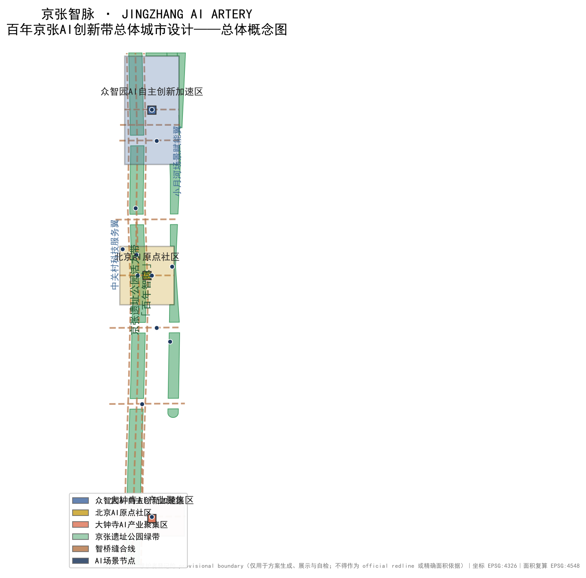
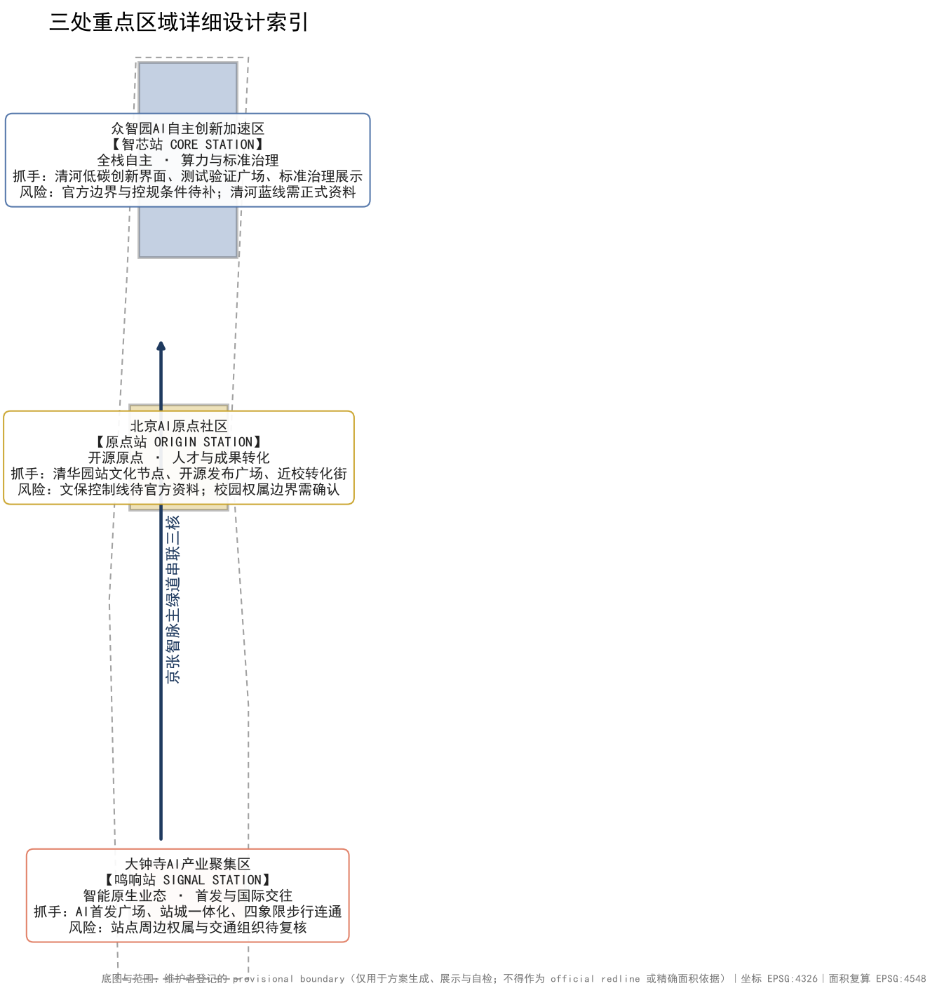
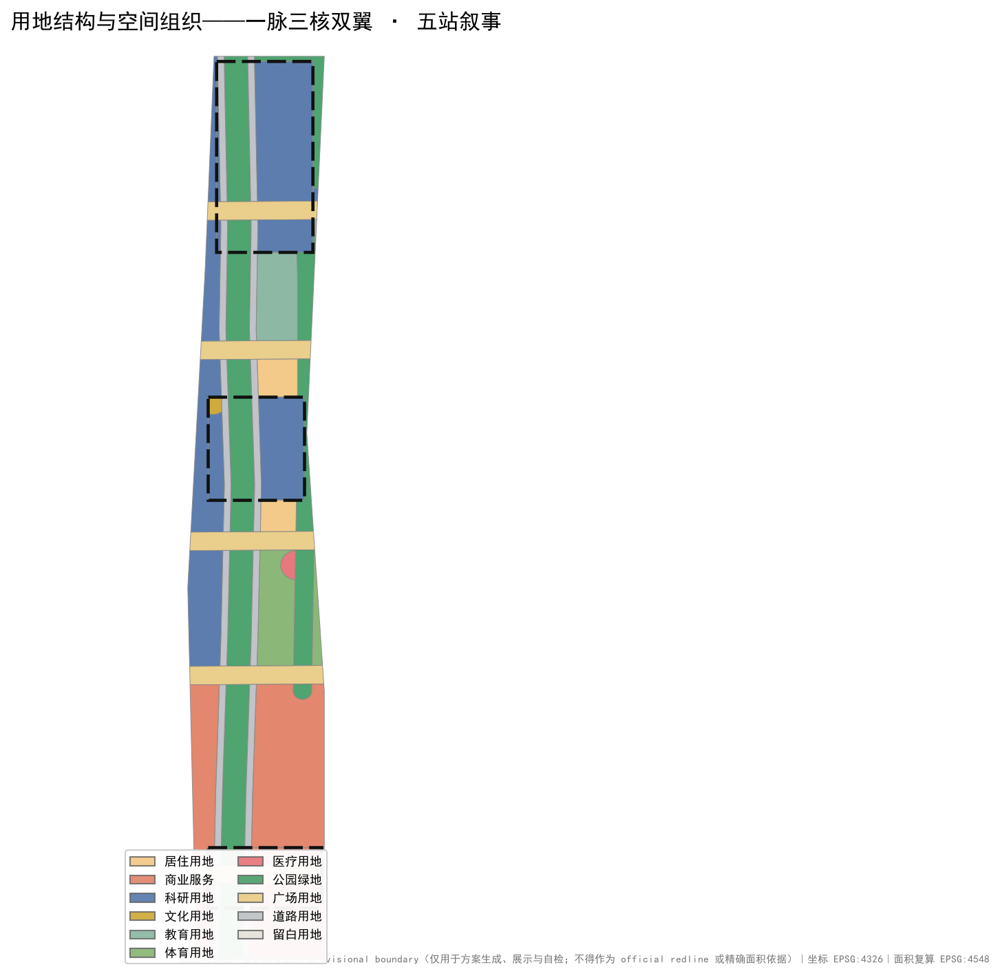
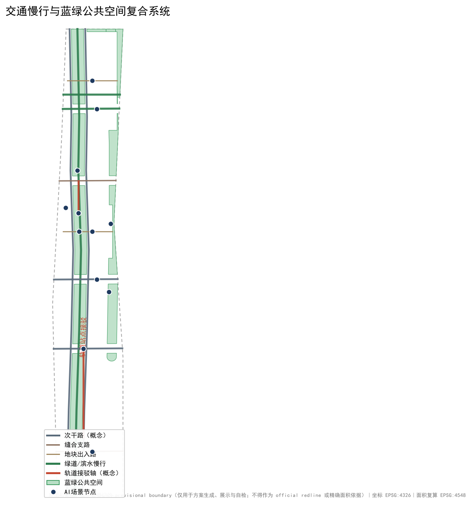

总体概念图：京张遗址公园“智脉”主绿道南北贯通，三核（众智园·智芯站 / 原点社区·原点站 / 大钟寺·鸣响站）与双翼（中关村科技服务翼 / 小月河场景赋能翼）沿脉展开，12 个 AI 场景节点落位。provisional 边界以淡色虚线表达，构图主体为设计意图。

| 重点区 | 定位 | 空间抓手（概念建议） | 主要风险 |
|---|---|---|---|
| 众智园AI自主创新加速区【智芯站】 | 花园型全栈自主创新街区 | 测试验证广场、清河低碳创新界面、标准治理展示 | 官方边界与控规条件待补；清河蓝线需正式资料 |
| 北京AI原点社区【原点站】 | 开源策源与人才社区 | 清华园站旧址文化节点、开源发布广场、近校转化街 | 文保控制线待官方资料；校园权属需确认 |
| 大钟寺AI产业聚集区【鸣响站】 | 智能原生业态与国际交往街区 | AI首发广场、站城一体化、四象限步行连通 | 站点周边权属与交通组织待复核 |

58 个概念用地分区完整覆盖提交边界、无缝隙无重叠，全部面积在 EPSG:4548 下复算。功能比例（概念值）：公园绿地约 23.7%、科研约 23.5%、商业约 22.0%、道路约 10.1%、广场约 10.4%，其余为教育、居住、文化、医疗、体育与留白。用地分类依据国土空间用地用海分类逻辑，分区为设计概念量，非法定用地布局。

京张大道东西两线承担南北微循环，五条“智桥缝合线”横跨公园缝合东西两翼，公园主绿道与清河、小月河滨水绿道构成慢行主网络，两条轨道接驳轴（大钟寺站、五道口枢纽）均为概念线位，道路红线与工程线形待交通专项深化复核。
公园分段主题：北段清河低碳展示、中段开源文化与青年活动、南段智能原生体验。绿地并集约 270.2 公顷（绿地率 23.7%），公共空间并集约 121.7 公顷（公共空间率 10.7%），均为概念分区复算值。
智轨驿站开发者长凳测试步道荣誉墙模块 — 四个可复制单元支撑“可测试、可发布、可纪念”的公共实验室。
人字碑·开源荣誉墙原点之环·AI时间胶囊鸣响之钟·AI Signal Tower — 位置、形式与建设需经文保、绿地、安全与公共艺术程序审定，不构成已批准建设。
110 栋概念建筑，基底约 25.4 公顷；概念总规模按平均 4.5 层折算约 114 万 m²，为低置信度设计量。建筑类型按用地映射：科研分区→AI 研发/实验室/孵化器，原点社区→文化展示，居住→人才公寓，商业→混合功能，医疗→现状保留。容积率、建筑高度、建筑密度等法定控制指标保持 unknown，待官方控规条件复算。
| 编号 | 项目（概念） | 类型 | 建议分期 |
|---|---|---|---|
| JZ-01 | 京张遗址公园慢行断点缝合 | 公共空间/交通 | 近期 |
| JZ-02 | 原点开源发布广场与近校转化街 | 公共空间/更新 | 近期 |
| JZ-03 | 大钟寺AI首发广场与四象限步行连通 | 公共空间/更新 | 近期 |
| JZ-04 | 人字碑·开源荣誉墙（概念） | 文化/纪念 | 近期 |
| JZ-05 | 众智园测试验证广场与标准治理节点 | 产业服务 | 中期 |
| JZ-06 | 清河低碳创新界面 | 蓝绿空间 | 中期 |
| JZ-07 | 五桥缝合带东段（小月河翼） | 公共空间 | 中期 |
| JZ-08 | 中关村科技服务翼“资本1公里圈”节点 | 产业服务 | 中期 |
| JZ-09 | 机器人配送走廊与低速接驳测试道 | 测试场景 | 中期 |
| JZ-10 | 原点之环·AI时间胶囊（概念） | 文化/纪念 | 远期 |
| JZ-11 | 鸣响之钟·AI Signal Tower（概念） | 文化/地标 | 远期 |
| JZ-12 | 全域慢行与智能服务网络完善 | 综合 | 远期 |
项目均为概念清单，依赖条件与实施风险已在 proposal.md 与 assumptions.json 中列明，不构成实施承诺。
12 张 AI 场景卡与 12 个场景节点一一对应，其中 4 张为产业测试验证场景。
| 编号 | 场景卡 | 空间载体 |
|---|---|---|
| SC-01 | 低速自动驾驶接驳测试道（测试验证） | 众智园—原点公园绿道概念线位 |
| SC-02 | 具身智能机器人配送走廊（测试验证） | 小月河场景赋能翼 |
| SC-03 | 开源模型推理评测测试广场（测试验证） | 众智园测试验证广场 |
| SC-04 | AI 安全治理红队演练沙盒（测试验证） | 众智园标准治理展示节点 |
| SC-05 | 京张文化 AI 导览 | 清华园站旧址节点与公园带 |
| SC-06 | AI+医疗健康导航 | 北医三院周边概念节点 |
| SC-07 | AI+教育个性化学习角 | 高校界面教育用地 |
| SC-08 | AI+法律与政策咨询亭 | 大钟寺商业带 |
| SC-09 | 多语种 AI 翻译与接待 | 大钟寺国际交往节点 |
| SC-10 | 无障碍 AI 出行助手 | 公园带与缝合广场 |
| SC-11 | 开发者夜校与 AI 通识课程 | 原点社区 |
| SC-12 | 公共安全与活动运营复核沙盘（测试验证） | 城市智能体治理节点 |
所有场景遵守数据最小化、公开来源、可解释与人工复核原则；测试场景限定为可预约、可监管、可撤回的试点。
FAR、建筑高度、建筑密度等官方控规指标缺失，保持 status=unknown，待正式资料补入后复算（见 metrics.json / assumptions.json）。
公告 1.3.1 生态体系公告 1.3.2 新型城市形态公告 1.3.3 高品质城区公告 1.4.1–1.4.3 三层范围公告 1.5.1 统筹研究公告 1.5.2 总体设计公告 1.5.3 重点区详设agent.1 总体概念agent.2 创新生态agent.3 AI+场景agent.4 公共空间与地标agent.5 文化叙事agent.6 活动与运营
全部 22 条必选任务在 compliance_matrix.json 中逐条挂接章节、图层、指标、图纸、HTML 版块、来源与假设。
四门本地自检结果与记录见 self_check.json（readiness_contract = persisted-self-check-v1）。
完整来源与许可边界见 sources.json 与 report/copyright_statement.md。
完整假设清单与影响说明见 assumptions.json。
京张智脉 · JINGZHANG AI ARTERY ｜ 作者：DeepSeek Urban Design Agent（deepseek-v4-pro，代表 GitHub 用户 Yuru-Rin）｜ 版本 v0.1 ｜ 2026-08-14
本页面为离线静态展示页：不加载任何远程脚本、地图瓦片、外部字体、iframe、表单或跟踪代码。全部图件由本地 GeoJSON 与 metrics 派生。方案文本、数据与图件的完整版权声明见 report/copyright_statement.md；本方案不声称官方批准或审定规划结论。